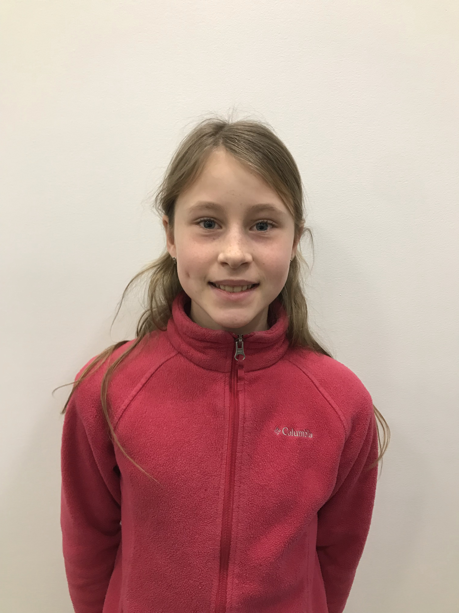
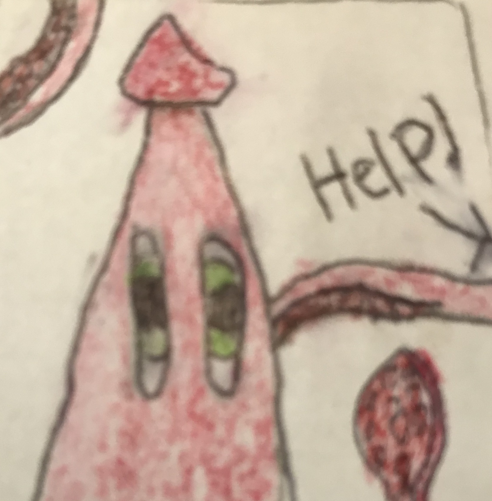

Cyber Scare Fll
Challenge
Members
Alex is a good person who made this website. When he is not programming or doing FLL, he enjoys, drawing, playing the piano and accordion, and acting. His favorite parts of FLL are building the robots, and researching the research (he can also be funny at times).Pearl likes to be outside, draw, and met new people. When she is actually doing FLL, she enjoys building and coding the robots.
 Brady likes programming, legos, baseball, basketball, cooking, spending time with family and frends, playing bordgames and video games.
Brady likes programming, legos, baseball, basketball, cooking, spending time with family and frends, playing bordgames and video games.
Zach Zach is mainly a programmer, though helps out with building if necesary. He was also one of the coders and designers of the research project.
Coaches
Andrew likes to make robots and websites. He also likes to climb mountains and play guitar in a band. Jacob is a grown up[Citation Needed], but is still awesome.
Jacob is a grown up[Citation Needed], but is still awesome.